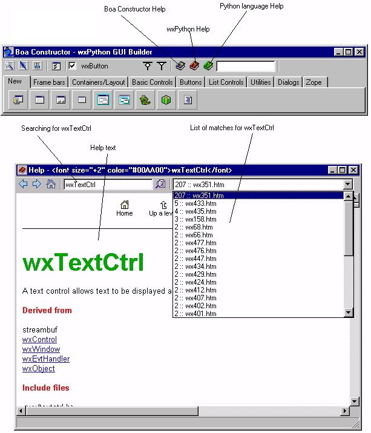

| Getting Started Guide for Boa Constructor |
| Getting Started Guide for Boa Constructor |
The Boa Constructor environment provides links to different help files from your environment. These are Boa Construct Help, Python Language Help and wxPython Help.
The help window provides standard HTML based navigation and a search facility.
If the help does not display correctly, you may need to configure your environment.
Another good reference for understanding the wxPython functionality is the wxPython Demonstration. This should be in the directory demo, under your wxPython directory. You can locate the demo.py file using the 'Explorer' on the Editor window. Expand the sys.path option. The wxPython directory will be either under the <Python root> or under the site-packages directory. The demo.py is in the demo directory which is a sub-directory of wxPython.
| Getting Started Guide for Boa Constructor |